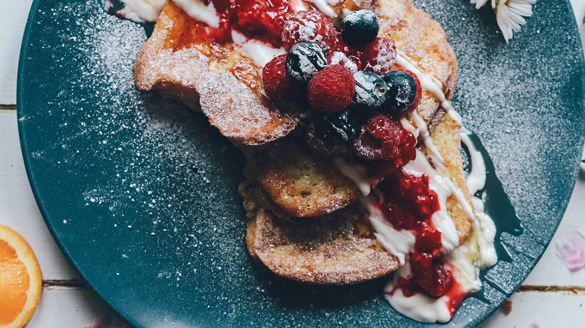

Cinnamon French Toast with Mixed Berries

Description
French toast is a go-to breakfast meal in the kitchen. With only a few ingredients, you can make a meal that satisfies your sweet tooth. This dish is also packing with protein.
There is a yougrt topping that is made from non-fat greek yougrt and the lemon juice mixed in will create a nice light sour flavor that will go well with the mixed berries that will lay on top.
Ingredients
- 3 slices sourdough bread
- 1 large egg
- 1 tablespoon butter
- 10 ml almond milk
- 150g frozen mixed berries
- 5g suagr
- 120g non-fat yougrt
- 1 teaspoon cinnamon
- 1 teaspoon vanilla extract
- 2 tablespoons lemon juice
Steps
- In a swallow bowl, mix the egg, almond milk, cinnamon and vanilla extract.
- Add sourdough bread to the egg mixture and coat evenly.
- Place butter in a nonstick pan and melt at medium heat. Once butter is melted, add bread into the pan.
- Cook french toast on both sides for about 2 minutes or until golden brown.
- While french toast is cooking place the mixed berries, sugar and a splash of water into a saucepan.
Cook at medium heat and smash berries once they soften. Continue to cook unitl sauce thickens.
- Mix yougrt and lemon juice in a bowl and set aside.
- Assemble plate with french toast, followed by yougrt mxixture and topping it with the mixed berries.
- Enjoy!